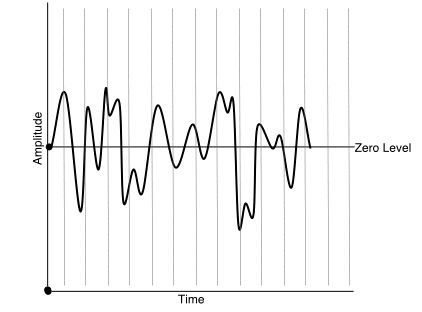
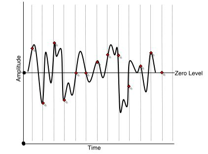
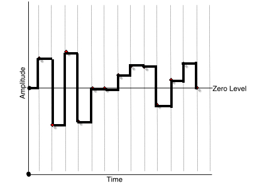
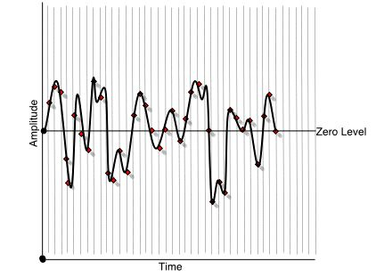
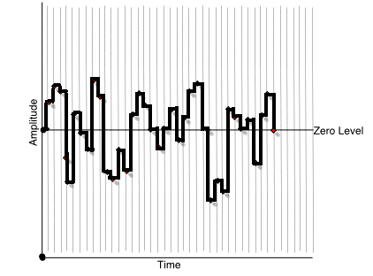

In the analog-to-digital conversion process, the electrical signal from a microphone or line source is sampled many times per second, and the voltage level for each sample is stored as a number. The analog-to-digital converter is in fact a very fast digital voltmeter, which can sample a continuously fluctuating electrical signal at rapid intervals. If the interval between samples is short enough, and we take accurate enough voltage readings at each sample point, we can get a very high-resolution picture of the audio waveform captured into numbers. We can visualize this process using a time-domain graph:

Figure 7.9. The sampling process
Figure 7.9 shows a bipolar audio waveform on the time domain graph. The vertical lines in the background represent sample points in time. The frequency at which we sample is called the sample rate. By taking the reading of the voltage at each of those sample points, we'd get individual values for each discrete sample as shown in the following illustration:

Figure 7.10. The sample points
Figure 7.10 shows the points at which the voltage is being read (sampled), depicted as red diamonds. Now if we used those voltages stored digitally as sample points to recreate the waveform we would get the waveform in illustration 7.11:

Figure 7.11. The recreated waveform
As you can see, this is not a very good representation, a very low-fidelity reproduction. The more times we sample in a given timeframe (the higher the sample rate), the higher the fidelity of the reproduction. Figures 12 and 13 show the result of sampling at a higher frequency, and the resultant waveform.

Figure 7.12. The original waveform sampled at a higher frequency

Figure 7.13. The recreated waveform
As these illustrations show, higher sample rates give higher fidelity waveform reproduction. CD-quality sound has a sample rate of 44,100 times per second, or 44.1kHz. DAT tape uses a sample rate of 48kHz. New, high resolution digital audio systems may sample at 96kHz or even 192kHz. Generally speaking, we try to sample at more than double the frequency of the highest sound component we are trying to capture. Why not sample at the highest possible rate at all times? Four letters: COST. The chips that actually do the sampling cost more the faster they can operate, but more importantly, the more times you sample, the more samples you need to store for each second of sound. Increased storage brings many costs:
For these reasons, and because in many situations the faster sampling/higher fidelity sound quality does not produce any noticeable musical improvement, we take great care to store absolutely no more samples than are actually needed to meet our music production requirements.